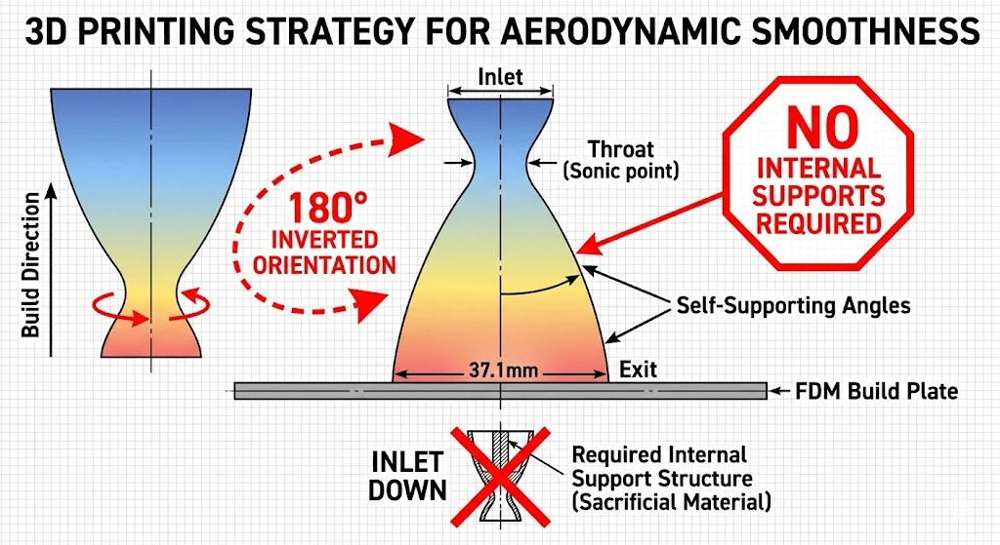

Optimized Bell Nozzle
A Mach 3.5 LOX/RP-1 nozzle for a 100 bar chamber, sized from NASA CEA data, written as an OpenSCAD parametric shell, meshed and run in OpenFOAM, and printed inverted so the parabolic wall supports itself.
The problem
A bell nozzle has one job: take hot, high-pressure gas and turn as much of its thermal energy into directed momentum as the geometry allows. The target here was an exit Mach number of 3.5 at roughly 3 km altitude, expanding from a 100 bar chamber down to 0.7 bar at the exit plane.
That is an aggressive expansion for something 45 mm long, and most of the work was finding out what that aggression costs — in geometry, in the solver, and on the print bed.
Design inputs
From NASA CEA, for the LOX/RP-1 pair at O/F 2.56.
- Propellants
- LOX / RP-1
- Mixture ratio (O/F)
- 2.56
- Chamber pressure
- 100 bar
- Chamber temperature
- 3615 K
- Exit pressure target
- 0.7 bar (3 km standard altitude)
- Ratio of specific heats
- 1.2
- Molecular weight
- 22.65 g/mol
- Target exit Mach
- 3.5
Sizing and geometry
Those inputs fix the area ratio, and the area ratio fixes the geometry: a 5.0 mm throat radius opening to an 18.55 mm exit radius — 37.1 mm across the exit plane — over a 45 mm parabolic bell, with a constant 2.0 mm wall.
The check I care about is that the geometry and the target agree. The built area ratio is 13.8. The isentropic area ratio for Mach 3.5 at a ratio of specific heats of 1.2 is 13.77. Those matching to within a tenth of a percent is the evidence that the sizing chain — CEA output, isentropic relations, drawn geometry — was carried through correctly.
Area ratio 13.8. Theory wants 13.77.
- Throat radius
- 5.0 mm
- Exit radius
- 18.55 mm (37.1 mm diameter)
- Area ratio, built
- 13.8
- Area ratio, isentropic theory
- 13.77
- Pressure ratio
- 143 : 1
- Bell length
- 45.0 mm
- Wall thickness
- 2.0 mm
- Geometry
- OpenSCAD parametric shell
The solve, and how it failed
The geometry went into OpenFOAM as a compressible steady-state case (rhoSimpleFoam), driven through SimFlow, with the inlet at 100 bar and 3615 K, no-slip walls, and a 0.7 bar outlet. Discretization was upwind.
It did not converge. The residuals stalled rather than falling, and by iteration 24 the run had diverged — the enthalpy residual first, with the solver reporting continuity errors and pressures that are not physically meaningful. A 143:1 pressure ratio and a 3615 K inlet put gradients across the sonic line that a steady-state solver, on this mesh and with this discretization, could not hold.
What I will not claim is that the flow field was correct before it broke. I do not have a velocity or Mach field to show, so the honest summary is that the case was set up, it ran for 24 iterations, and it fell over. The next attempt would start with a transient solver and a mesh built around the throat rather than the domain.
Printing it
The nozzle was printed on an Entina Tina2 in FDM. The problem with printing a bell is the internal curve: printed the obvious way, inlet down, the overhang needs sacrificial support inside the expansion section, and every contact point leaves a mark exactly where the boundary layer is most sensitive.
Turning the part 180° solves it. With the exit face flat on the build plate, the parabolic wall never exceeds its own self-supporting angle, so the geometry supports itself and nothing touches the inside surface.

What I would change
Three things, in order. Mesh the nozzle rather than the box around it, with real refinement through the throat. Start transient and let the flow establish before asking a steady solver for an answer. And produce a Mach field, because a convergence plot is evidence about the solver, not about the nozzle.